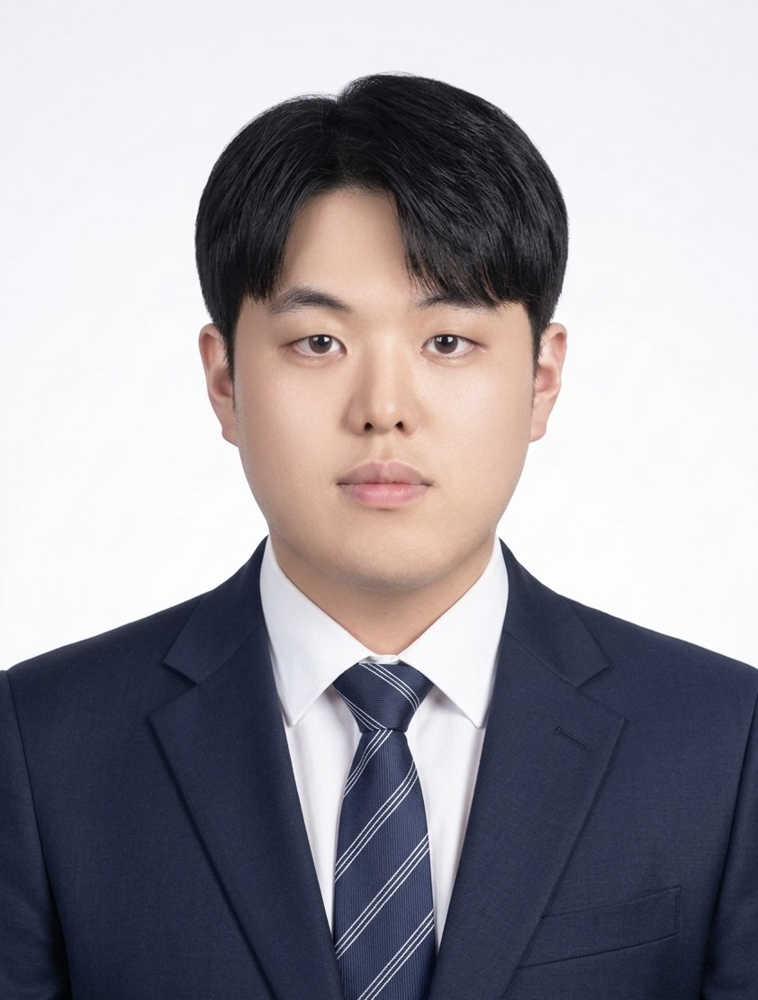

images/project-1.jpg
01
현대자동차 제조·품질관리
현대자동차에서 약 22개월 동안 의장공정 조립과 차량 검사를 했다.
흡기호스와 사이드브레이크 검사에 대해 개선 의견을 제안했다.
김태원 | 기계시스템공학 학업 포트폴리오

현대자동차에서 약 22개월 동안 수출선적, 의장, 품질관리 업무를 했다. 지금은 경상국립대학교 기계시스템공학과 3학년으로, 제조 현장의 문제를 찾아 원인을 분석하고 개선하는 품질 엔지니어를 목표로 공부하고 있다.
01
현대자동차에서 약 22개월 동안 의장공정 조립과 차량 검사를 했다.
흡기호스와 사이드브레이크 검사에 대해 개선 의견을 제안했다.

02
약 5개월 동안 경찰청 서버와 교육청 무선 네트워크 장비 관련 업무를 했다.
무선 AP·PoE 장비를 설정하고 납품 관련 문서를 작성했다.

03
2022년 KDI 영워킹그룹 정책제안 프로젝트에 참여했다.
귀어 활성화 아이디어를 기획했고 프로젝트 총괄을 맡았다.
현장 실무와 기계공학 이론을 연결하는 엔지니어를 목표로 하고 있다. 대학에서 기계공학을 공부하며 설계, 열유체 해석, 제조 데이터 분석으로 관심 분야를 넓히고 있다.
여러 부서를 거치며 공정의 흐름과 검사 기준의 중요성을 배웠다.
ISO 9001·ISO 14001 국제심사원(보) 과정을 수료했다. 2026년 11월 12일 기준 경상국립대학교 비교과 프로그램 112개가 공식 이수 내역서에 기록되어 있다.
현장의 문제를 정확하게 이해하고, 공학적 분석과 데이터를 활용해 원인을 규명하며 개선방안을 제시하는 엔지니어가 되는 것이 목표다.
현대자동차에서 신규 인원에게 현장업무를 교육했다. GNU 프렌카운슬러 기초·심화·보수교육도 수료했다. 실제 또래 상담 활동은 아직 하지 않았다.